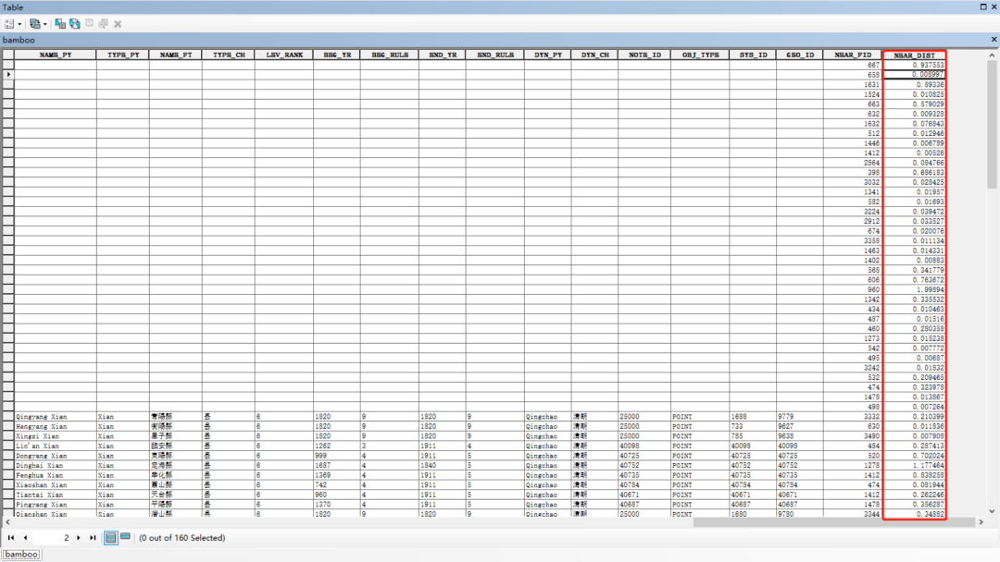

收录于合集
#实用技术 19 个
#数据可视化 15 个
2020年10月，香港大学龚启圣（James Kung）教授与另外两位合作者陈婷、马驰骋两位教授在经济学顶级期刊《经济学杂志》（ The Economic Journal ）上发表了一篇重要的量化历史研究论文《科举万岁！中国文官考试制度的持久效应》（Long Live Keju! The Persistent Effects of China’s Civil Examination System），该文探讨科举考试对当代中国人力资本的长期影响，文中使用了非常精巧的工具变量，给人留下了极为深刻的印象。
具体说来，因为考生在科举考试备考时需要用到大量的书籍，因此书籍获得的方便程度在很大程度上就成为考生在科举考试中成败的关键。在这层意义上，决定书籍获得与否的关键便在于印刷中心。但是印刷中心的分布可能是人为选择的结果，因为在作者的样本中，278个府中只有19个印刷中心分布。如果将其各个府到印刷中心的最短距离作为工具变量，那么可能会受到完全外生的质疑。那么究竟是什么原因决定了印刷中心的分布呢？作者想到，由于书籍的制作需要用到大量的竹子和松树，在书籍制作完成后，一定会选择交通便捷的方式进行运输。因此，在古代交通不发达的条件下，为了运输的便利与降低运输成本，印刷厂的选址一定是选在临近河流的位置。这样，由于竹子和松树的分布是自然形成的，满足了工具变量中最重要的外生要求，因此将各个府到竹子和松木的最短河流距离作为工具变量就被精巧地构造出来了。那么这一距离如何计算呢？我们之前曾经在《实用技术|如何用R快速计算进军距离距离？以汉丞相诸葛武侯南征为例》为例说明在R中如何使用sf包计算点与点之间的最短距离，今天则以《科举万岁！》一文提供的复验数据（Replication Data）详细地介绍一下在ArcGIS中计算点与线之间的最短距离。
我们首先下载本文的复验数据（下载地址请见文末参考，同时该地址也可以在线浏览论文），解压之后的Figure3文件夹内文件是本文需要使用的数据，它包括了竹子产地、松木产地、河流分布、印刷中心分布、福建经济中心与清代所谓的“中国本部”（China Proper）等shp文件。
我们首先打开ArcGIS文件夹中的ArcMap，选择File，选择Add Data，再选择Add Data，便弹出了载入数据的对话窗口。
由于本文是以竹子（点）到河流（线）的最短直线距离作为示例，因此在载入后我们相应勾选bamboo、MainRiver和qing_china_proper三项，接着选择右侧ArcToolBox中的Analysis Tools工具，点击Proximity，再双击Near，便会弹出一个界面。我们在弹出的界面中Input一栏输入bamboo，再在Near Features一栏中选择MainRiver，同时将单位从Metres改为Kilometres再单击OK，以上操作如下图所示：
在计算完成后，我们会收到相应的提示（如下图右下角红框所示），这时候我们双击右下角弹出的Near提示：
在此基础上，我们右击工具栏Near下方Output Feature Class: Bamboo，右击弹出菜单后选择Add to Display：
我们针对左侧Layers中的bamboo单击右键，选择Open Attribute Table：
之后会弹出如下表格，其中最后一列NEAR_DIST便是我们通过ArcGIS计算的最短距离：

然后我们可以单击最左侧的下拉菜单点Export将其输出，这一步过程如下图所示：
软件默认的输出方式是dbf，我们将其改成txt格式以方便用Excel打开：
在输出后，我们新建一个Excel表格，单击“数据”，选择“自文本”打开刚才输出的txt表格：
我们依次按照弹出的“文本导入向导”进行选择，首先是在第一步勾选“数据包含标题”：
然后是在第二步勾选“Tab键”、“逗号”：
在进入第三页后，我们单击“完成”即可：
最后我们会看到Excel弹出下图所示的“导入数据”对话框，单击“确定”即可。
至此，我们用ArcGIS计算竹子产地与河流之间的最短距离并输出的任务就完成了。计算松树产地到河流之间的最短距离并输出的方法与上述介绍的完全一致。这些距离可以在后续的回归分析中用作工具变量或者控制变量。当然，如果我们有关于海岸线的shp，我们还可以计算城市等到海岸线的距离，以作为开放对经济发展影响研究当中的变量等等。
总之，本文只是介绍了ArcGIS中的一个小功能，该软件还有其他强大的地理信息处理功能，我们也将在后续的学习过程中继续与大家分享这些心得体会，欢迎各位读者继续关注、支持我们。
参考文献：
Ting Chen, James Kai-sing Kung, Chicheng Ma, Long Live Keju! The Persistent Effects of China’s Civil Examination System, The Economic Journal , Volume 130, Issue 631, October 2020, Pages 2030–2064, https://doi.org/10.1093/ej/ueaa043
复验数据下载地址：
https://academic.oup.com/ej/article/130/631/2030/5819954?login=true
撰文：杨端程 审读：吴温泉 编辑：康张城